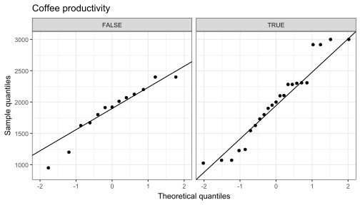
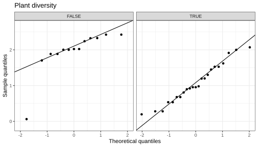
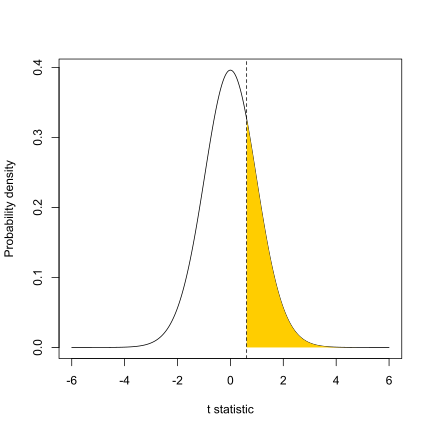
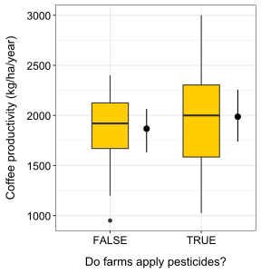
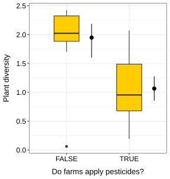

![]()
Show me the code
install.packages("BSDA")In this tutorial, we will continue to explore different methods for testing differences between two groups. By the end of the tutorial, you will be able to apply non-parametric tests for paired samples (the Wilcoxon signed-rank test and the sign test), as well as both parametric (independent t-test) and non-parametric (Wilcoxon rank-sum test) approaches for independent samples.
Let’s get started!

For one of the exercises, you will need to use a function in the BSDA R package. Make sure to install it before starting the tutorial.
install.packages("BSDA")To work on this tutorial, you will need to load the readxl, tidyverse, and BSDA packages. You can load them using library().
library(readxl)
library(tidyverse)
library(BSDA)Start by importing the data used in this course (see previous tutorial). Recalculate the difference in coffee productivity between 2020 (coffee_prod variable) and 2015 (coffee_prod_past variable). Store these values in a new column called coffee_prod_diff.
#Option 1 (csv file)
data <- read_csv("gss_statistics_master_data_set2.csv")
#Option 2 (Excel file)
data <- read_excel("gss_statistics_master_data_set2.xlsx")
#Recalculate difference in coffee productivity between 2020 and 2015
data$coffee_prod_diff <- data$coffee_prod - data$coffee_prod_pastWe want to determine whether coffee productivity measured in 2020 (after an intervention from extension services) is higher than that measured in 2015 (before an intervention from extension services). In other words, did the intervention increase coffee productivity on farms?
In this example, the samples are paired because coffee productivity was measured on the same farms in two different years (before and after an intervention). This comparison also involves two groups: productivity measured in 2015 versus productivity measured in 2020.
Null hypothesis: there is no difference in coffee productivity between 2015 and 2020.
Alternative hypothesis: coffee productivity measured in 2020 is higher than coffee productivity measured in 2025 (which is what we would expect if the intervention had been successful). This is a directed hypothesis.
In the previous tutorial, we checked whether the difference in coffee productivity between 2015 and 2020 followed a normal distribution before running a paired t-test. Both the Shapiro-Wilk’s test and the Q-Q plot suggested that the normality assumption was reasonable. But what should we do if this assumption is not met?
One option is to use a non-parametric test for paired samples. The term non-parametric means that the test is based on the ranks of the data values rather than their raw values. In this tutorial, we will introduce two options: the Wilcoxon signed-rank test and the sign test. The underlying principles of these tests have already been covered in the associated lecture (see lecture slides if you need to refresh your memory).
The Wilcoxon signed-rank test calculates a test statistic (\(V\)), which is the sum of the ranks of the positive differences between paired observations (after removing pairs with zero difference). The minimum value of the \(V\) statistic is zero and occurs when all differences between paired observations are negative. The maximum value of the \(V\) statistic occurs when all differences are positive. In that case, \(V\) is simply the sum of the ranks from 1 to \(n\), where \(n\) is the number of paired (non-zero) observations (Equation 1).
\[ V_{\max} = \sum_{i=1}^{n} i = \frac{n(n+1)}{2} \tag{1}\]
In R, you can run a Wilcoxon signed-rank test for paired samples using the wilcox.test() function. The arguments taken by this function are similar to those used in the t.test() function:
x and y: the numeric vectors of data to compare (one vector per group)
paired: a logical value (TRUE or FALSE) indicating whether the samples are paired (TRUE) or independent (FALSE)
alternative: specifies the type of test; "two.sided" (default, for undirected hypotheses), "greater", or "less"
mu: the expected difference between group means if the null hypothesis is true
conf.level: the confidence level for the interval (default is 0.95)
Use Equation 1 to calculate the maximum value of the \(V\) statistic for our dataset. Then, use the wilcox.test() function to perform a Wilcoxon signed-rank test (assume that the normality assumption is not met). You can ignore the warning messages. They simply indicate the presence of ties in the data, meaning that some differences in coffee productivity between 2015 and 2020 have the same value and were therefore assigned the same rank.
Examine the output of the test to identify the reported statistics, and use this information to determine whether there is evidence that coffee productivity in 2020 is higher that coffee productivity in 2015.
#Calculate the number of non-zero differences in coffee productivity
n <- length(data$coffee_prod_diff[data$coffee_prod_diff != 0])
#Calculate Vmax
Vmax <- (n*(n+1))/2
#Do Wilcoxon signed-rank test
wilcox.test(x = data$coffee_prod,
y = data$coffee_prod_past,
paired = TRUE,
alternative = "greater",
mu = 0)
Wilcoxon signed rank test with continuity correction
data: data$coffee_prod and data$coffee_prod_past
V = 573.5, p-value = 1.188e-05
alternative hypothesis: true location shift is greater than 0The p-value of the test is much lower than the significance threshold (0.05). Therefore, we reject the null hypothesis that there is no difference in coffee productivity between 2015 and 2020 (or that the distribution of the difference in coffee productivity between 2015 and 2020 is symmetric around zero). We conclude that coffee productivity in 2020 is significantly higher than in 2015.
Note that the maximum value of the test statistic (\(V\)) is 630. The observed value of the \(V\) statistic is 573.5, which is fairly close to the maximum value. This tells you that most of the paired differences are positive (which is expected if coffee productivity is higher in 2020 than in 2015).
The sign test for dependent samples calculates a test statistic (\(S\)), which is equal to the number of non-zero paired observations for which the observed difference is positive. The minimum value of the \(S\) statistic is zero and occurs when all non-zero differences between paired observations are negative. The maximum value of the \(S\) statistic occurs when all differences are positive. In that case, \(S\) is equal to the number of paired (non-zero) observations.
In the sign test for dependent samples, the null hypothesis is that the median of the differences between paired observations is equal to zero. The sign test makes few assumptions about the underlying distribution of the data. However, compared with alternative tests, the sign test typically has lower statistical power.
In R, you can run a sign test using the SIGN.test() function in the BSDA R package. Its arguments are similar to those of the t.test() function:
x and y: the numeric vectors of data to compare (one vector per group)
alternative: specifies the type of test; "two.sided" (default, for undirected hypotheses), "greater", or "less"
md: the expected median difference between groups if the null hypothesis is true
conf.level: the confidence level for the interval (default is 0.95)
Use the SIGN.test() function to perform a sign test for dependent samples (assume that the normality assumption is not met). Examine the output of the test to identify the reported statistics, and use this information to determine whether there is evidence that coffee productivity in 2020 is higher that coffee productivity in 2015.
#Do sign test
SIGN.test(x = data$coffee_prod,
y = data$coffee_prod_past,
alternative = "greater",
md = 0)
Dependent-samples Sign-Test
data: data$coffee_prod and data$coffee_prod_past
S = 28, p-value = 0.0002541
alternative hypothesis: true median difference is greater than 0
95 percent confidence interval:
103.1007 Inf
sample estimates:
median of x-y
212.8038
Achieved and Interpolated Confidence Intervals:
Conf.Level L.E.pt U.E.pt
Lower Achieved CI 0.9338 106.0000 Inf
Interpolated CI 0.9500 103.1007 Inf
Upper Achieved CI 0.9674 100.0000 InfThe p-value of the test is lower than the significance threshold (0.05). Therefore, we reject the null hypothesis that the median difference in coffee productivity between 2015 and 2020 is equal to zero. We conclude that coffee productivity in 2020 is significantly higher than in 2015.
Before diving into a new type of parametric test to compare two groups (independent t-test), let’s first introduce new research questions.
We now want to test whether coffee productivity (coffee_prod) and plant diversity (shannon_PIM) differ between farms that use pesticides and those that do not. Specifically, we are interested in whether pesticide use is associated with higher coffee productivity but lower plant diversity. In this example, the samples are independent because both response variables were measured on different farms (i.e., observations are not paired). The comparison involves two groups: farms that use pesticides and farms that do not, making an independent t-test a good candidate for testing our hypotheses.
Based on the information above, write a null and an alternative hypothesis for each independent t-test. Are the hypotheses directed or undirected?
Null hypotheses (coffee productivity): there is no difference in coffee productivity between farms that use or don’t use pesticides.
Alternative hypothesis (coffee productivity): coffee productivity is higher in farms that use pesticides than in farms that do not. This is a directed hypothesis.
Null hypotheses (plant diversity): there is no difference in plant diversity between farms that use or don’t use pesticides.
Alternative hypothesis (plant diversity): plant diversity is lower in farms that use pesticides than in farms that do not. This is also a directed hypothesis.
Before checking whether the underlying assumptions of an independent t-test are met, we first need to create a new logical variable (let’s call it pesticide2). This variable should be TRUE for farms that use pesticides and FALSE for farms that do not. In R, new variables can be easily created from existing ones using the mutate() function from the dplyr package.
In data, create a new logical variable (pesticide2) that is TRUE for farms that use pesticides and FALSE for farms that do not. Use dplyr::mutate() to create this new variable. You will also need to use a relational operator (see first tutorial) to write a condition that will allow R to categorize farms based on pesticide use.
data <- dplyr::mutate(data, pesticide2 = pesticide > 0)After inspecting the dataset, we can see that it contains 23 farms that use pesticides (pesticide2 = TRUE) and 13 farms that do not (pesticide2 = FALSE). This means that the two groups we want to compare do not have the same number of observations. Let’s keep this in mind as we move forward.
Independent t-tests rely on three main assumptions. First, the data should be normally distributed within each group (the normality assumption). Second, the groups being compared should have equal variances (the homoscedasticity assumption). Third, the observations must be independent of one another. Let’s now check whether these assumptions are met.
As discussed in the previous tutorial, the normality assumption can be checked using Shapiro-Wilk’s test and Q-Q plots (one test or plot per group). Time to put into practice what you learned in the previous tutorial!
coffee_prod) and plant diversity (shannon_PIM), are normally distributed within each group of farms (those that use pesticides and those that do not).#Filter data for farms that use pesticides
data_true <- dplyr::filter(data, pesticide2 == TRUE)
#Filter data for farms that do not use pesticides
data_false <- dplyr::filter(data, pesticide2 == FALSE)
#Shapiro-Wilk's tests for farms that use pesticides
shapiro.test(data_true$coffee_prod)
Shapiro-Wilk normality test
data: data_true$coffee_prod
W = 0.93837, p-value = 0.1658shapiro.test(data_true$shannon_PIM)
Shapiro-Wilk normality test
data: data_true$shannon_PIM
W = 0.963, p-value = 0.5266#Shapiro-Wilk's tests for farms that do not use pesticides
shapiro.test(data_false$coffee_prod)
Shapiro-Wilk normality test
data: data_false$coffee_prod
W = 0.92601, p-value = 0.3019shapiro.test(data_false$shannon_PIM)
Shapiro-Wilk normality test
data: data_false$shannon_PIM
W = 0.65895, p-value = 0.0002221#Create Q-Q plot for coffee productivity
ggplot(data, aes(sample = coffee_prod)) +
stat_qq() +
stat_qq_line() +
facet_wrap(~ pesticide2) +
theme_bw() +
xlab("Theoretical quantiles")+
ylab("Sample quantiles")+
ggtitle("Coffee productivity")
#Create Q-Q plot for plant diversity
ggplot(data, aes(sample = shannon_PIM)) +
stat_qq() +
stat_qq_line() +
facet_wrap(~ pesticide2) +
theme_bw() +
xlab("Theoretical quantiles")+
ylab("Sample quantiles")+
ggtitle("Plant diversity")
The shannon_PIM variable does not appear to follow a normal distribution in farms that do not use pesticides. This is indicated by the Shapiro-Wilk’s test, which yields a p-value below the 0.05 significance threshold, and by the corresponding Q–Q plot, where one observation deviates strongly from the reference line. In contrast, coffee productivity data meet the normality assumption in both farm groups. Overall, plant diversity data meet the normality assumption only in one group (farms that use pesticides). To test our hypothesis that plant diversity is higher in farms that do not use pesticides, we therefore need to use a statistical test that does not assume normality.
The second assumption we need to check is that the groups being compared have equal variances. This can be assessed using Bartlett’s test (see the previous tutorial).
coffee_prod) and plant diversity (shannon_PIM), have equal variances in the two farm groups (those that use pesticides and those that do not).#Test for coffee productivity
bartlett.test(x = data$coffee_prod,
g = data$pesticide2)
Bartlett test of homogeneity of variances
data: data$coffee_prod and data$pesticide2
Bartlett's K-squared = 1.8835, df = 1, p-value = 0.1699#Test for plant diversity
bartlett.test(x = data$shannon_PIM,
g = data$pesticide2)
Bartlett test of homogeneity of variances
data: data$shannon_PIM and data$pesticide2
Bartlett's K-squared = 0.18596, df = 1, p-value = 0.6663Both tests indicate homoscedasticity (p-value > 0.05). We therefore fail to reject the null hypothesis and conclude that the two farm groups have equal variances for both coffee productivity and plant diversity.
Independence of observations depends on the sampling design and data collection procedure. In the example used in this tutorial, data were collected from different farms, and we can therefore assume that the independence assumption is met.
Given that coffee productivity data meet all the assumptions of an independent t-test, we will focus on this variable to illustrate how to perform an independent t-test in R.
As in the previous tutorial, let’s first do this using the “slow way” by manually computing the test statistic (\(t\)) and the p-value of the test.
The \(t\) statistic quantifies the difference between the means of two independent groups relative to the variability in the data.
When equal variances are assumed (which is the case here), the difference between the two sample means is divided by the standard error of the difference calculated using a pooled standard deviation. In this case, the t statistic can be calculated using Equation 2, where \(\bar{y}_A\) is the mean of group A, \(\bar{y}_B\) is the mean of group B, \(n_A\) is the number of observations in group A, \(n_B\) is the number of observations in group B, and \(s_p\) is the pooled standard deviation. The pooled standard deviation can be calculated using Equation 3, where \(s_A^2\) is the variance of group A and \(s_B^2\) is the variance of group B.
\[ t = \frac{\bar{y}_A - \bar{y}_B}{s_p \sqrt{\frac{1}{n_A} + \frac{1}{n_B}}} \tag{2}\]
\[ s_p = \sqrt{\frac{(n_A - 1)s_A^2 + (n_B - 1)s_B^2}{n_A + n_B - 2}} \tag{3}\]
When equal variances are not assumed (Welch’s t-test), the standard error of the difference is calculated using Equation 4, without pooling.
\[ t = \frac{\bar{y}_A - \bar{y}_B}{\sqrt{\frac{s_A^2}{n_A} + \frac{s_B^2}{n_B}}} \tag{4}\]
Under the null hypothesis (i.e., if there is no difference in the means of the two populations being compared), the \(t\) statistic follows a Student’s t distribution with \(n_A+n_B-2\) degrees of freedom (Figure 1).
coffee_prod variable) is higher in farms that use pesticides. You can assume homoscedasticity (groups have equal variances). Calculate the value of the test statistic (\(t\)) using Equation 2 and Equation 3.#Calculate group means
yA <- mean(data_false$coffee_prod)
yB <- mean(data_true$coffee_prod)
#Calculate group variances
varA <- var(data_false$coffee_prod)
varB <- var(data_true$coffee_prod)
#Calculate the number of observations in each group
nA <- length(data_false$coffee_prod)
nB <- length(data_true$coffee_prod)
#Calculate the pooled standard deviation
sp <- sqrt(((nA-1)*varA + (nB-1)*varB)/(nA + nB - 2))
#Calculate the value of the t statistic
t <- (yA - yB)/(sp*sqrt((1/nA)+(1/nB)))The value of the test statistic is -0.614
#34 degrees of freedom, directed hypothesis (5%)
#Interpolate value using linear approximation
critical_value <- 1.697+(1.697-1.684)/(30-40)*4The critical value of the test is 1.692
The absolute value of the test statistic is lower than the critical value. Therefore, we fail to reject the null hypothesis that there is no difference in coffee productivity between farms that use or do not use pesticides. We conclude that using pesticides do not lead to an increase in coffee productivity in our example.

We can now calculate the p-value associated with this test. We can do this using the pt() function in R.
To calculate this p-value, it is important to remember that we are testing a directed (one-sided) hypothesis, as we expect coffee productivity in farms that use pesticides to be higher than in farms that do not use pesticides. Graphically, this corresponds to calculating the area under the distribution curve to the right of the dashed vertical line shown in Figure 1. This area represents the p-value and appears to be quite large.
Calculate the p-value of the independent t-test using pt(). What can you conclude from this test?
#Option 1
p <- pt(t, df=nA+nB-2, lower.tail=TRUE)
#Option 2
p <- pt(abs(t), df=nA+nB-2, lower.tail=FALSE)The calculate p-value is 0.2715, which is greater than the significance threshold (0.05). Therefore, we fail to reject the null hypothesis that there is no difference in coffee productivity between farms that use or do not use pesticides. We conclude that using pesticides do not lead to an increase in coffee productivity in our example.
Independent t-tests can be easily performed in R using the t.test() function. Here is a reminder of the most important arguments of this function:
x and y: the numeric vectors of data to compare (one vector per group)
paired: a logical value (TRUE or FALSE) indicating whether the samples are paired (TRUE) or independent (FALSE)
alternative: specifies the type of test; "two.sided" (default, for undirected hypotheses), "greater", or "less"
mu: the expected difference between group means if the null hypothesis is true
var.equal: a logical variable indicating whether to treat the two variances as being equal. If TRUE then the pooled variance is used to estimate the variance otherwise the Welch (or Satterthwaite) approximation to the degrees of freedom is used.
conf.level: the confidence level for the interval (default is 0.95)
Use the t.test() function to perform the statistical test. What information is shown in the R output? What can you conclude from this test? Write a few sentences to report this result, including the test statistic, p-value, sample size (degrees of freedom), and interpretation.
t.test(x=data_false$coffee_prod,
y=data_true$coffee_prod,
paired = FALSE,
alternative = "less", #Expect productivity in farms without pesticides to be lower
mu = 0,
var.equal = TRUE)
Two Sample t-test
data: data_false$coffee_prod and data_true$coffee_prod
t = -0.61433, df = 34, p-value = 0.2715
alternative hypothesis: true difference in means is less than 0
95 percent confidence interval:
-Inf 209.1183
sample estimates:
mean of x mean of y
1867.900 1987.228 We conducted an independent t-test to assess whether pesticide application is associated with increased coffee productivity (Figure 2). Coffee productivity was measured in farms that apply pesticides (n = 23) and in farms that do not apply pesticides (n = 13). We found no evidence that coffee productivity was higher in farms using pesticides (t = 0.61, p-value = 0.2715). On average, coffee productivity in farms where pesticides were applied was 6.4% higher than in farms without pesticide application.

If the normality assumption is not met (as was the case for the shannon_PIM variable quantifying plant diversity), it is more appropriate to use a non-parametric test to compare independent groups. One suitable option is the Wilcoxon rank-sum test.
The Wilcoxon rank-sum test (also called the Mann-Whitney test) is a non-parametric test used to compare two independent samples, especially when the assumption of normality may not hold. This test calculates a test statistic (\(W\)) based on the ranks of the observations in the two groups being compared (but see lecture slides for a step-by-step description of how this test statistic is calculated). The minimum value of \(W\) is zero and occurs when all observations in one group are smaller (or larger) than all the observations in the other group. In other words, large differences between groups will translate into a small value of the test statistic \(W\) (which is different from what we have seen so far). A large value of the test statistic \(W\) suggests little difference between groups.
In R, this test can be performed using the wilcox.test() function (see beginning of this tutorial). Because the samples are independent, the argument paired = FALSE must be specified.
Use the wilcox.test() function to perform a Wilcoxon rank-sum test to test the hypothesis that plant diversity (shannon_PIM variable) is greater in farms that do not use pesticides. You can ignore the warning message. It simply indicates the presence of ties in the data.
Examine the output of the test to identify the reported statistics, and use this information to determine whether there is evidence that plant communities are more diverse in farm that do not apply pesticides.
#Do Wilcoxon rank-sum test
wilcox.test(x = data_false$shannon_PIM,
y = data_true$shannon_PIM,
paired = FALSE,
alternative = "greater",
mu = 0)
Wilcoxon rank sum test with continuity correction
data: data_false$shannon_PIM and data_true$shannon_PIM
W = 263, p-value = 9.813e-05
alternative hypothesis: true location shift is greater than 0Given that the normality assumption was not met, we used a Wilcoxon ran-sum test to test the hypothesis that farms that do not use pesticides have a greater diversity of plant species than farms in which pesticides are applied. We found support for this hypothesis (Figure 3, W=263, P<0.001). Compared to farms using pesticides, plant diversity (measured using the Shannon index) was 82.9% higher in farms that do not apply any pesticides.
